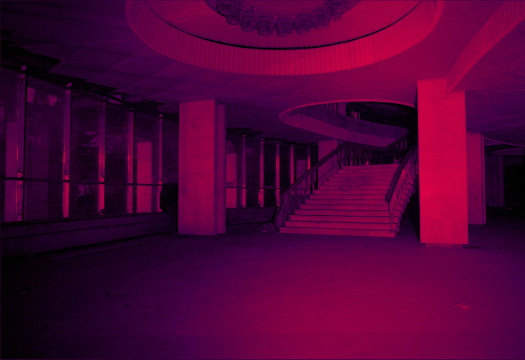
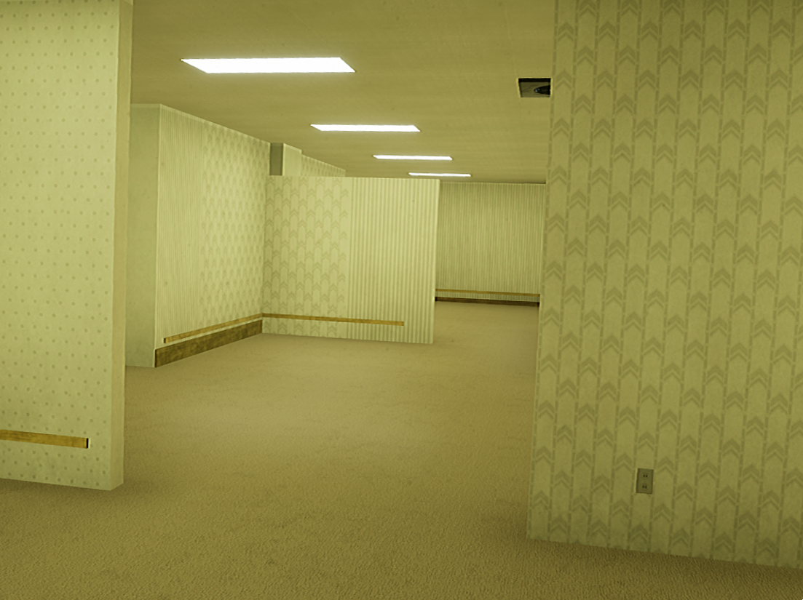

OS ESPAÇOS LIMINARES

- O “Espaço Liminar” é o lócus do medo e da ambiguidade. Trata-se de um lugar fora da realidade, onde
alguém
seria colocado contra seu arbítrio, sem a esperança de sair. Este ambiente, caracterizado pela falsa afinidade
com o mundano, possui uma natureza frequentemente representada como próxima do onírico.
O termo “Liminar”, vem do latim “Limen” e significa Limite. No campo da antropologia, é usado
para descrever o
estado mental e social de um indivíduo durante um rito de passagem cultural. Foram feitos estudos de caso, nos
quais foram observadas características “Liminares”, não somente físicas, mas também na construção do enredo em
obras cinematográficas. Esses estudos forneceram ferramentas que possibilitaram a recriação do efeito de
liminaridade em uma outra obra, um projeto de animação produzido nesta segunda parte do trabalho.
O conceito de espaço liminar é recente e quase tão vago quanto aquilo que tenta conter. Pode ser um espaço
físico real ou um sentimento. Um espaço liminar pode ser definido como "o momento entre o 'o que foi' e
o
'próximo'. É um lugar de transição, uma temporada de esperar e não saber". Mas também cabe a descrição de
espaços físicos que estão ausentes de sua função ou que funcionem como pontos de transição entre espaços.
Nessa classificação teríamos também lugares abandonados, escadas, elevadores, aeroportos. Em todos essas
situações, acontece o desconforto, o sentimento de irrealidade, de transitoriedade.
AS BACKROOMS
